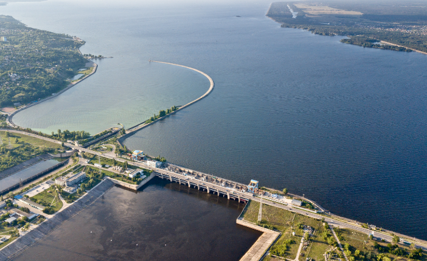
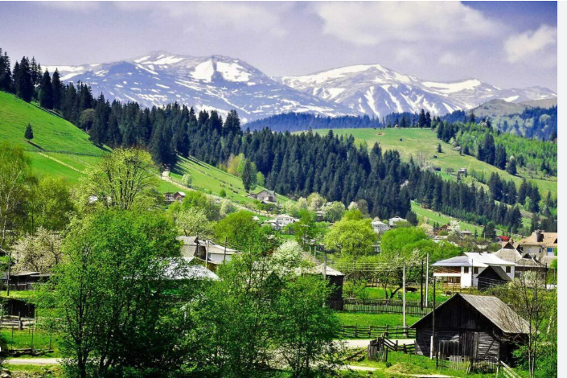
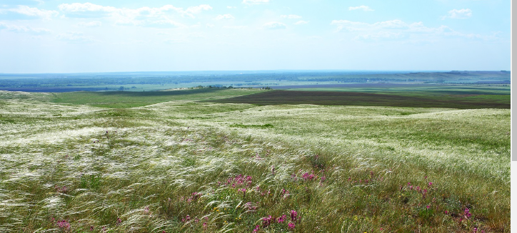

Дніпро
 Дніпро́ — четверта за довжиною і третя за площею басейну річка Європи, річка з найдовшою течією в Україні.
У природному стані довжина Дніпра становила 2285 км, тепер — 2201 км; у межах України — 981 км.
Площа басейну — 504 тис. км², з них у межах України — 291,4 тис. км².
Карпати
Карпа́ти (пол. Karpaty, нім. Karpaten, словац. Karpaty, угор. Kárpátok, рум. Carpaţi, серб. Карпати) — гірська система в центральній частині Європи.
Гірські хребти Карпат простяглися велетенською підковоподібною дугою довжиною понад 1 500 км від пагорбів Гайнбурзьких Карпат (включно) на правобережжі Дунаю в Австрії до міста Ниш, що на річці Нишава у Сербії.
Це третя за довжиною простягання у Європі гірська система після Уральських (2 500 км) і Скандинавських гір (1 700 км).
Загальна площа Карпатської гірської країни становить 211,6 тис. км2. Вона розташована на території восьми держав: Австрії, Чехії, Словаччини, Польщі, України, Угорщини, Румунії та Сербії.
Понад половину площі (53,4%) гірських масивів Карпат розташовані у межах Румунії, 16,6% — Словаччини, 10,2% — України, майже 9,3% — Польщі.
У Словаччині гірські хребти Карпат охоплюють 71,6% території держави.
Степи України
Украї́нський сте́п — степова природна зона в Україні, розташована на півдні, центрі й сході країни.
Західна й центральна частина Чорноморсько-Каспійського степу, складової великого Євразійського степу.